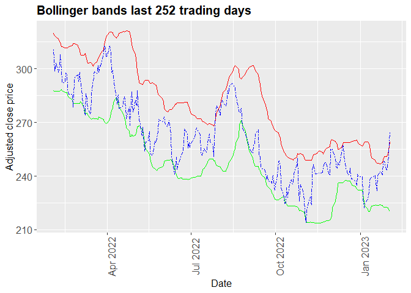

stocksignalsr: Introduction
The goal of stocksignalsr is to be used as a starting point for identifying stock buy/sell signals. Stock investing is a complex process which requires ongoing efforts and there is no one formula or indicator that works all the time. There exists extensive research on how to identify opportunities and profit from stocks. Methodologies for evaluating financial instruments range widely. An investor can utilize macroeconomic research, fundamental analysis, news, analyst reports, or technical analysis. In all those approaches numerical analysis is the underlying common theme.
In this project, the team aims to evaluate three key technical indicators that can be used to evaluate where the stock price is relative to its historic performance. These indicators use only the stock’s historic price and are by no means an exhaustive approach to investing. These indicators are:
200-day price moving average 10 vs 20-day price moving average 20-day Bollinger bands Typically when the market and stocks in particular are trading below 200-day moving average, they are considered in a down trend. When they trade above the 200-day moving average stocks are considered in an uptrend. The 10-20 day indicator, indicates short term price trend reversals, and can be utilized to trade stocks on a short term basis. Finally, the Bollinger bands indicate whether a stock price is above or below two standard deviations from its 20 day average price. Bbands can be used as indicator for short term overbought/oversold stocks.
Package details
Package details The package consists of 6 functions:
-
get_data: The function downloads all available historic price data for a selected stock and saves it. It utilizes the tidyquant R package to automate the process. -
moving_average: The function calculates a moving average, i.e. the average stock closing price over a specified period, which is passed as argument size in the function call. It uses the data saved via get_data. -
plot_ma_200days: The function plots the 200-day moving average together with the stock price for a specified period. It uses the output from the function moving_average to plot the chart. -
plot_ma_10_20: The function plots the 10 and 20-day moving average together with the stock price for a specified period. It uses the output from function moving_average to plot the chart. -
get_bbands: The function calculates the 20 day Bollinger bands for the existing period of the data and returns a dataframe with the respective upper and lower band. It uses data saved via get_data. -
plot_bbands: The function plots upper and lower Bollinger bands together with the stock closing price for over the past 252 trading days. It uses the output from function get_bbands to plot the chart.
R ecosystem
There are multiple packages related to utilizing finance data. For example, past projects in DSCI524 have explored various transformations to help analyzing stocks like this one: https://github.com/UBC-MDS/stockAnalyzer.
Our aim, however, is to explore specific technical analysis indicators and streamline the process by providing a hands-on package which can be used in daily stock analysis. Furthermore, this package will help streamline the process in order to help automation of the basics of stock screening.
Installation
You can install the development version of stocksignalsr from GitHub with:
# install.packages("devtools")
devtools::install_github("UBC-MDS/stocksignalsr")Usage
library(stocksignalsr)Please ensure that the directory in which the current directory is located is not write protected, as data will be saved in that location. You can use setwd() to change the location in which the console operates.
In order to download price-volume data for a given stock ticker, run function get_data. Data will be saved in csv file in the directory containing your current working directory:
get_data("MSFT", "1986-03-13")Function get_bbands returns a data frame with calculations for upper and lower Bollinger bands. The data frame contains columns:
-
datefor which the data was collected -
adjustedfor the adjusted closing price on respective date -
mavgfor the moving average closing price over the last 20 days -
up,dnfor the respective upper and lower band
This data can be used as a trading indicator when compared to the current price of the stock. In order to get the data run the function as follows:
bands <- get_bbands("MSFT")
tail(bands)
#> date adjusted mavg dn up
#> 9289 2023-01-19 231.93 235.4480 223.5626 247.3334
#> 9290 2023-01-20 240.22 235.3690 223.6335 247.1045
#> 9291 2023-01-23 242.58 235.2765 223.8019 246.7511
#> 9292 2023-01-24 242.04 235.4690 223.6805 247.2575
#> 9293 2023-01-25 240.61 235.5630 223.6427 247.4833
#> 9294 2023-01-26 248.00 236.1150 223.0222 249.2078Function moving_average generates a data frame with the moving average for the respective period in days entered in the function call. The data frame contains two columns:
-
datefor which the data was collected -
adjustedrepresenting the moving average for the respective period.
This data can be used as an indicator in combination with other factors takaen into account by the user. The function can be used run as follows.
ma <- moving_average("MSFT", 20)
tail(ma)
#> date adjusted
#> 9270 2023-01-19 235.4480
#> 9271 2023-01-20 235.3690
#> 9272 2023-01-23 235.2765
#> 9273 2023-01-24 235.4690
#> 9274 2023-01-25 235.5630
#> 9275 2023-01-26 236.1150In order to visualize a plot of the Bollinger bands for a stock, run function plot_bbands as follows:
plot_bbands("MSFT")
In order to visualize a plot of the 10 and 20-day moving average along with the stock’s closing price, run function plot_ma_10_20days as follows:
plot_ma_10_20days("MSFT")Finally, in order to visualize a plot of the 200-day moving average along with the stock’s closing price, run function plot_200ma as follows:
plot_200ma("MSFT")